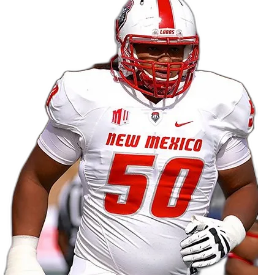
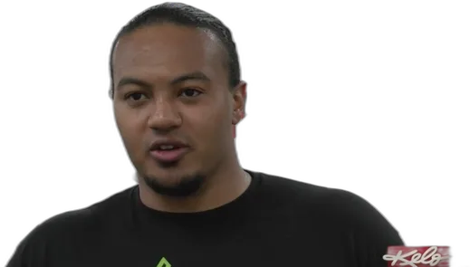

Ataque · Coordinador ofensivo
Teton Saltes
Edad
28
Posición
Tackle ofensivo
Físico
1,96 m · 136 kg
Universidad
New Mexico
Nación
Oglala Lakota
La historia
Oglala Lakota criado en la reserva de Pine Ridge, en Dakota del Sur, el condado más pobre del país. Sobrino-nieto del medallista de oro olímpico Billy Mills y de una familia de atletas. Dejó la reserva cuando su madre entró en medicina y no empezó a jugar al fútbol hasta el penúltimo año de instituto. Aun así, se convirtió en el único ganador de un gran premio nacional en la historia de New Mexico, el Wuerffel Trophy. Tras perder a su mejor amigo y compañero por suicidio, fundó y dirige el BEAR Project para la salud mental, testificó ante el Congreso y la legislatura de Nuevo México, y en 2024 entró en el Salón de la Fama del Deporte Indígena Norteamericano. Cada verano regresa a Pine Ridge a mentorizar a los niños.

En el campo
- 2017–2020New Mexico LobosDe línea defensiva a ofensiva; tackle titular y Wuerffel Trophy 2020.
- 2021New York JetsAgente libre no drafteado.
- 2022Michigan Panthers · USFL
- 2023Arlington Renegades · Campeón XFL
- 2024–2025St. Louis Battlehawks · UFL
- 2026Orlando Storm · UFL

En el banquillo
- 2024Liga NFL Flag · Santo Domingo PuebloEntrenador de chavales en Nuevo México.
- Cada veranoPine RidgeMentor de jóvenes en la reserva.
La cinta
- Habilidad táctica70
- Liderazgo95
- Experiencia30
- Desarrollo de talento72
- Potencial92
Una apuesta por el carácter y el techo, no por el currículum.
— Nota del ojeador
Destinos D1
Mountain West
New Mexico Lobos
Su alma mater y todo su mundo universitario; único gran premio nacional de la historia del programa. El regreso a casa.
Silla templadaACC
Florida State
Sin contactos previos: puro oportunismo de mente ofensiva. Con Malzahn retirado y Norvell llamando su propio ataque, un revolcón en el staff es plausible.
Silla ardiendoBig Ten
Wisconsin Badgers
Conexión floja por currículum: aquí manda el corazón. Tu equipo, y abren 2026 contra Notre Dame en Lambeau. Entrar en un staff bajo presión.
Silla caliente